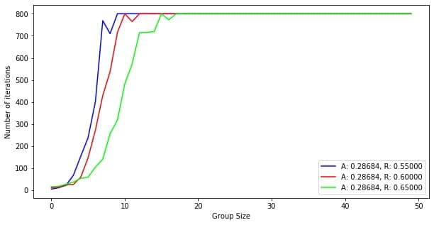

I've heard of such concept that the more people in group, the more difficult to reach concensus. Sounds obvious, but how fast that difficulty grows with group size?
I've made a simple model: there is a group of people of size N. They are trying to reach the consensus. At the begining they has no ideas. On each iteration each one do one of this actions: with probability A (acceptance rate) the participant accept the idea of random participant from previous iteration. With probability R (rejection rate) the participant decides to leave their own idea from previous step. And finnaly, with probability 1-(A+R) they generate a new idea. Process stops eather when every participant shares the same idea or when the process reach maximum iteration.
I've tried group sizes from 2 to 50 with different A and R. Conclusions are not surprizing. The more stubborn are in group the slower convergence. The more "idea generators" in group the faster the process. Even with the most utopian parameters for the group of size 12 is nearly impossible to reach concensus.
work in progress